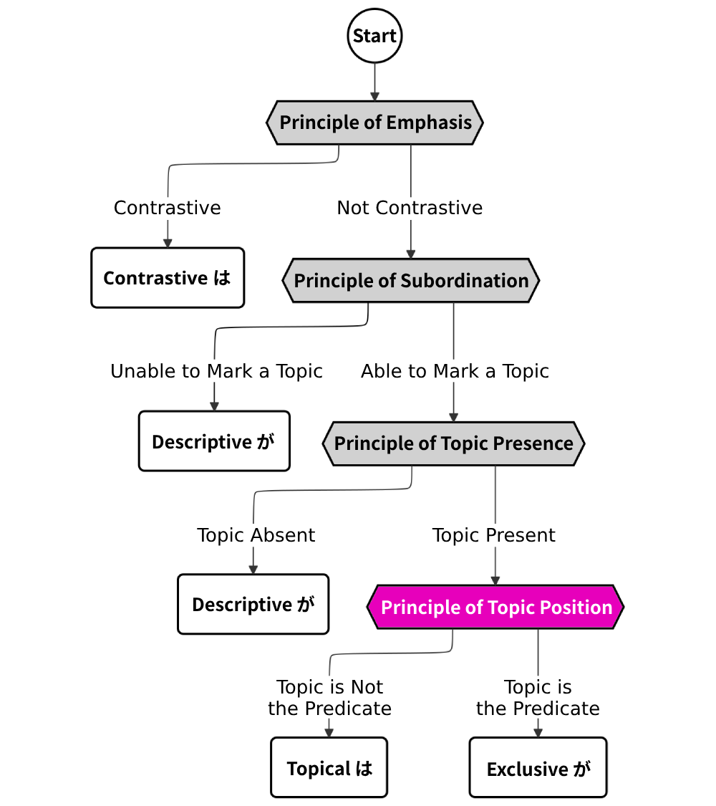
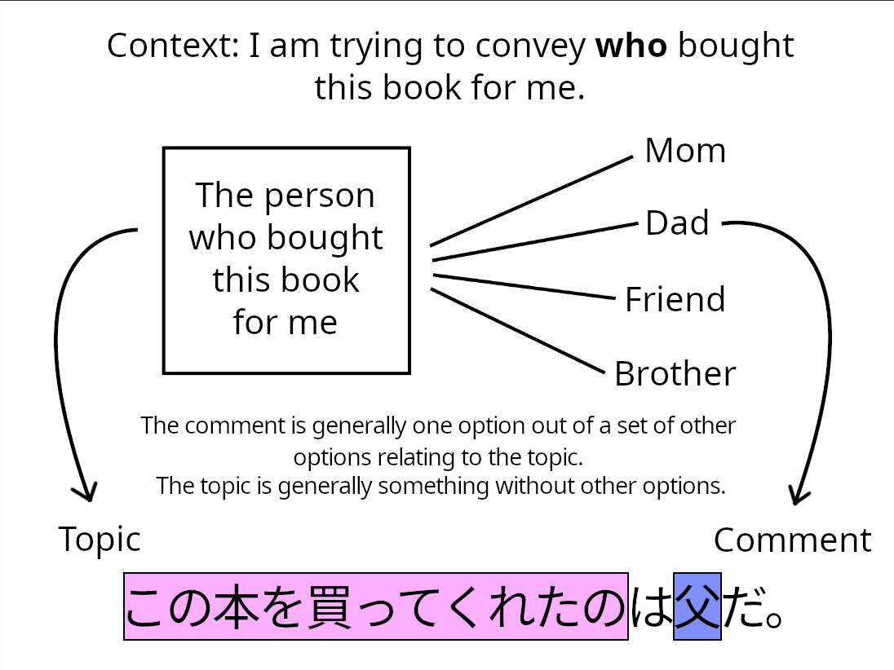

This article is one in a series that comprehensively explains usage of は vs. が in Japanese. Most content is directly pulled from 『｢は｣ と ｢が｣』 by Hisashi Noda.

Which Part is the Topic?
If we establish that a sentence contains a topic, we can move to the next stage of the flowchart. The principle of topic position decides which part of the clause/sentence is the topic and where we should place it.
The topic is what you are talking about, and the comment is something you are conveying about the topic. So when choosing what becomes the topic and what becomes the comment, we can follow the general rule that the comment conveys one option among other options relating to the topic.

Choosing the Topic
Word-Level Considerations
Many rules besides this general one are useful for choosing the topic and comment. First, we’ll take a look at one case that must become a comment.
| A noun will always be the comment if it is an: |
|---|
| Interrogative Word (e.g. 誰, どれ, どこ, 何) |
This rule is the reason why you’ll almost never see 誰, どれ, どこ, or 何 marked with は. If you do see an interrogative word with は, it’ll always be contrastive は, not topical は, as is the case in (1).
1. だれは来て、だれは来なかったの？
Who came, and who didn’t?
Sentence-Level Considerations
The next set of rules I’ll introduce aren’t hard-set, but describe the general tendencies of topics in sentences. They can be summarized in the following table:
| Topic | Comment | |
|---|---|---|
| Noun Predicate | Words like 特徴 and 原因 | The details in question |
| Words like 高さ and 色 | The values in question | |
| "～というもの" | The explanation | |
| Adjective Predicate (With Comparison) |
Adjective predicate | Noun subject |
| Adjective Predicate (No Comparison) |
Noun subject | Adjective predicate |
| Verb Predicate | The part that comes earlier in standard word order |
The rules for sentences with a noun predicate are somewhat self-explanatory according to our general rule. Words like 中心, 目的, 基盤, 限度, 値段, 年齢, 名前, and メニュー frequently become the topic, while their content becomes the comment. This is shown in examples (2) through (4).1
2. アジア人の食生活の特徴は、主食があることです。
What’s different about Asian diets is the abundance of staple foods.
3. 普通のコースターの所要時間は約3分ほどだ。
Each ride lasts about 3 minutes.
4. このナタデココは、ココナッツミルクを静かに寝かせて発行させたもの。
This nata de coco is made by fermenting coconut milk.
“～というものは” is a phrase commonly used to give something a definition, and it can be shortened to “～とは”. In (5), “炭焼きと(いうもの)” is topicalized, and the rest of the sentence explaining what it is serves as the comment.
5. 炭焼きとは、木材を熱分解して、揮発しやすい成分を可燃性のガスとして燃やしたり、蒸発にして追い出したりした後、炭素が燃えてしまう手前で燃焼を止める作業である。
Sumiyaki is the process of pyrolyzing raw lumber to remove its volatile components to the point just before carbon starts burning away.
For sentences with adjective predicates, we have two different rules. The first one covers adjective sentences that express some kind of comparison, which includes phrases like “～のほうが [adjective]” and “～がいちばん [adjective]”. In this case, the adjective becomes the topic, and the noun subject is marked with exclusive が.
6. ｢でも、リカさんと一緒にいる永尾くんが、私の知ってる永尾くんの中で一番元気。｣
“Nagao always looks the happiest when I see him with Rika.”
7. ｢お茶にする、お酒にする？｣
｢お茶がいい｣
“Would you like tea or sake?”
“Tea, please.”
The second rule concerns adjective sentences that express no such comparison. These sentences will likely take the noun subject as its topic, marked by は.
8. 亭主関白の家は暗い。
Households with domineering husbands are depressing.
Sentences with verb predicates often have multiple case-marked nouns. The general rule with verb sentences is that whatever comes earliest in basic sentence order (subject-object-verb) becomes the topic. In (9), the subject (instead of the object) is the topic because it comes earlier in the SOV order.
9. その頃、三郎は刑務所の係長の部屋で茶坊主をしていた。
At that time, Saburou spent his days at the head of the jail’s room, tending to his every need.
The に case is typically expressed before the subject in sentences with predicate ある (as in ～に～がある), so ～に is topicalized in (10).
10. ｢アンチ百恵｣としての聖子には、百恵的エロティシズムを歌わないという宿命がありました。
As the “anti-Momoe”, Seiko was destined to never sing with Momoe-esque eroticism.
Context-Level Considerations
The concept of familiar information, as introduced in Topic Sentences, is also useful for determining the topic. Once again, this isn’t a hard-set rule, just a broad tendency topic sentences have.
Recall our definition for familiar information.
| Definition | Tends to Be... | |
|---|---|---|
| Familiar Information | - Anything present at the scene of the conversation. - Anything previously mentioned. - Anything related to something previously mentioned or present at the scene of the conversation. - Anything the speaker knows the listener is aware of. |
Topic |
As mentioned in the table, familiar information tends to become the topic. Consider examples (11) and (12).
11. 俺は中卒さ。
I’m a middle-school graduate, you see.
12. 途中に西宮名塩がある。同駅は複線電化時に名塩の各住宅団地のために作られた。
Nishinomiya-Najio is on the way there. The station of the same name was built when the line was electrified and double-tracked for the neighborhoods of Najio.
In (11), “俺” is topicalized as familiar information because it refers to the speaker, who is by definition present at the scene of the conversation. It’s very common for first and second-person pronouns to be topicalized because the speaker and the listener always exist in the context of the sentence.
In (12), “同駅” (the station of the same name) is topicalized because it is related to “西宮名塩” (Nishinomiya-Najio), a town which was mentioned in the previous sentence.
Some sentences violate this rule. In example (13), a specificational sentence, familiar information is marked by exclusive が, making it the comment.
13. しかし、天気は、大気の循環というか、気象全体がカオスになっているため、初期条件がほんの少し変わると、天候大異変になってしまう。これが天気予報の当たらない物理学的な理由である。
Weather isn’t a set cycle, but a chaotic system, where even the slightest alteration in starting conditions can cause massive changes. That is the reason why weather forecasts are sometimes off.
The reason why “これ” in (13) is marked with exclusive が is because the noun sentence rule we saw in Sentence-level Considerations took precedence over the familiar information rule. In fact, it is very common for specificational sentences to express familiar information as its comment.
Where is the Topic Placed?
In basic topic sentences, the topic is placed at the front of the sentence, and the comment is placed after it. Recall Chapter 1, when we saw the topicalization of “この本” (this book) in the case relation “父がこの本を買ってくれた(こと)”.
14. この本は父が買ってくれた。
This book is something my dad bought for me.
Likewise, we can topicalize the clause “この本を買ってくれた” (bought this book for me) in the case relation “父がこの本を買ってくれた(こと)”, so that it’s placed at the front.2 The result is shown in (15). Notice that when we topicalize the verb predicate, it has to be nominalized first (made into a noun). We do this by adding a nominalizer like の, もの, こと, 人, ところ, or some other noun that the verb can modify. This is why の is added to the end of “この本を買ってくれた”.
15. [この本を買ってくれたの]は父だ。
The one who bought this book for me is my dad.
Inverting this sentence will then give us (16).
16. 父が[この本を買ってくれたの]だ。
My dad is the one who bought this book for me.
Thus, the usage of は/が changes depending on what part of the sentence the topic is in. If the topic is before the predicate, it is marked by は. If the topic is the predicate, the subject will be marked with exclusive が. Remember that sentences with the topic in the predicate like (16) are called specificational sentences.
Notice how (15) and (16) have approximately the same meaning. In many cases, a sentence and its inversion are interchangeable, but there are certain tendencies towards which version of the sentence is more likely to be expressed depending on context and what kinds of words are contained in it.
Not all sentences with は will make sense when they’re inverted. For example, if we invert the basic topic sentence in (14), the result is highly unnatural. Before we go over when to use specificational sentences, we should learn how to recognize which sentences can be inverted and which ones can’t.
How to Tell When Inversion is Possible
First of all, if a sentence is specificational (i.e. uses exclusive が), it is already inverted, and we know for certain that it can be uninverted.
For sentences with は, it may not be obvious if we can invert the sentence. To find out when it’s possible to invert a basic topic sentence into a specificational sentence, we need to look at the meaning of its topic and comment. The topic is either referential or predicative. If the topic is referential, the comment is predicative; and if the comment is referential, then the topic is predicative.
| Definition | If Topicalized | |
|---|---|---|
| Referential | Some individual object/concept | Sentence cannot be inverted |
| Predicative | Some aspect, category, role, or value of the referential element |
Sentence can be inverted |
Let’s look at a sentence that can’t be inverted. Consider sentence (17) and its inversion (18).
17. ビルの高さは85mです。
The height of the building is 85 meters.
18. ×85mがビルの高さです。
85 meters is the building’s height.
The topic in (17) and (18) is “ビルの高さ” (the height of the building), and the comment is “85m” (85 meters). “ビルの高さ” refers to the concept of the building’s height, which is referential in this sentence. “85m” describes the value of the building’s height, making it the predicative element of this sentence. In fact, nouns that express some kind of quantity are almost always predicative. As described in the table, sentences cannot be inverted if the referential element is topicalized, which is why (18) sounds awkward.
Now let’s go back to our classic example ｢君が主役だ。｣. In this sentence, “君” (you) is the referential element, and “主役” (lead actor) is the predicative element because it is the role of “君.” Since the predicative element is the topic, this sentence can be inverted.
19. 主役は君だ。
The lead actor is you.
20. 君が主役だ。
You are the lead actor.
If, however, we topicalize the referential element “君,” it is no longer possible to invert the sentence.
21. 君は主役だ。
You are a lead actor.
22. ×主役が君だ。
A lead actor is you.
In the example ｢その火事の原因は漏電だ。｣, the referential element is “漏電” (electrical fault) and the predicative element is “その火事の原因” (the cause of the fire). We can invert this sentence because the predicative element is topicalized.
23. その火事の原因は漏電だ。
The cause of the fire is an electrical fault.
24. 漏電がその火事の原因だ。
An electrical fault is the cause of the fire.
It makes little sense to topicalize the referential element “漏電” here, because in the context of this sentence, the cause of the fire is unknown. So neither (25) nor (26) are natural.
25. ×漏電はその火事の原因だ。
The electrical fault is the cause of the fire.
26. ×その火事の原因が漏電だ。
The cause of the fire is the electrical fault.
Adjectives and verbs are always predicative in this system. In other words, it’s almost always possible to invert a sentence when an adjective or verb is the topic.
27. いちばんいいのはダイヤだ。
The best one is the diamond.
28. ダイヤがいちばんいい。
The diamond is the best one.
When to Use Specificational Sentences
When it comes to inversion, there are three types of sentences:
- Sentences that cannot be inverted or expressed as specificational sentences
- Sentences that can be inverted and are sometimes expressed as specificational sentences
- Sentences that can be inverted and are often expressed as specificational sentences
We just learned how to identify sentences that can’t be inverted, which necessarily fall into category (a). Now, let’s go over sentences in type (b) and (c).
| (b) Sometimes Specificational | (c) Often Specificational |
|---|---|
| - Sentences with a noun topic - Sentences with a verb topic (nominalized or not) - Sentences in which the comment is the details of topics like 特徴 or 原因 |
- Sentences with an adjective topic (nominalized or not) - Sentences in which the comment is familiar information - Sentences in which the comment is an interrogative word |
Example (23) falls into type (b) (sometimes specificational) because it has a noun topic, and its comment expresses the details of the topic “原因.” You are more likely to see ｢その火事の原因は漏電だ。｣ than its inversion ｢漏電がその火事の原因だ。｣.
(29) also falls into type (b), because it has a (nominalized) verb topic. You are more likely to see ｢そう言ったのは山田だ。｣ than its inversion ｢山田がそう言ったのだ。｣.
29. そう言ったのは山田だ。
The person who said that was Yamada.
In (30), the second sentence is type (c).
30. ｢バリバリしゃぶりついてるじゃないの、いつもは。｣
｢そう、しゃぶりつくのが、本当は一番おいしいんだよ。｣
“Why do you always suck on it like that?”
“It tastes better when you suck on it.”
Although its topic is a nominalized adjective, the sentence is expressed as an specificational sentence because its topic is nonetheless derived from an adjective. The last example in the previous section, (27), is also more commonly expressed as an specificational sentence (instead of (28)) because its topic is an adjective.
Sometimes, you’ll have conflicting principles in the same sentence.
31. これがそばの実です。
This is buckwheat grain.
In (31), the topic is a noun, but the comment “これ” refers to familiar information.3 In this case, the rule about familiar information is taking precedence, making it an specificational sentence of type (c). The uninverted ｢そばの実はこれです。｣ is also possible, but less common.
32. 結局どちらが勝ったんですか？
So, who won in the end?
(32) has a nominalized verb predicate, but it also has an interrogative word as its comment. Here, the rule about interrogative words is taking precedence, making it an specificational sentence of type (c). The uninverted ｢結局勝ったのはどちらですか？｣ is also possible, but less common.
Continued in 7. Other Usages and More は Structures...
Notes
-
These sentences fit into the ｢かき料理は広島が本場だ。｣ structure. ↩
-
This sentence fits into the ｢花が咲くのは7月ごろだ。｣ structure. ↩
-
This sentence violates the principle of topicalizing familiar information, like the example (13) in Choosing the Topic: Context-level Considerations ↩